Observations
18 patterns in the catalog's Sandpiper profiles (GTDB R232 (Sandpiper 2.0.0, Zenodo 20419175)), each with a figure, the underlying CSV, the exact definition and a confounder note.
About this page
Every comparison is study-aware: besides the pooled numbers we report the fraction of studies (≥ 20 samples in both groups) whose direction agrees and the median of per-study effects, because study explains more variance than any biological factor (see the variance card). Cards labelled exploratory are single-pass findings that have not been checked against the literature.
- Genus trajectories across life stages
- Prevotella/Bacteroides ratio follows the industrialisation gradient
- Genera that vanish or bloom with industrialisation (study-level volcano)
- Lifestyle: non-industrialised vs urban-industrialised
- Lifestyle: athletes vs healthy adults
- Does composition drift with collection year?
- Disease signatures that reproduce within studies
- Richness and Shannon diversity by life stage, HDI band and health condition
- World map: Prevotella prevalence
- World map: Bifidobacterium prevalence
- Caution: richness tracks sequencing depth
- How much of the composition does "study" explain?
- Exploratory: which genus dominates a sample, by life stage
- Exploratory: birth mode and the infant gut, within studies
- Exploratory: Akkermansia prevalence by life stage and HDI band
- Exploratory: feeding mode and the infant gut, within studies
- Exploratory: the most prevalent species across life stages
- Exploratory: hospital- vs community-recruited adults (location_site)
1. Genus trajectories across life stages

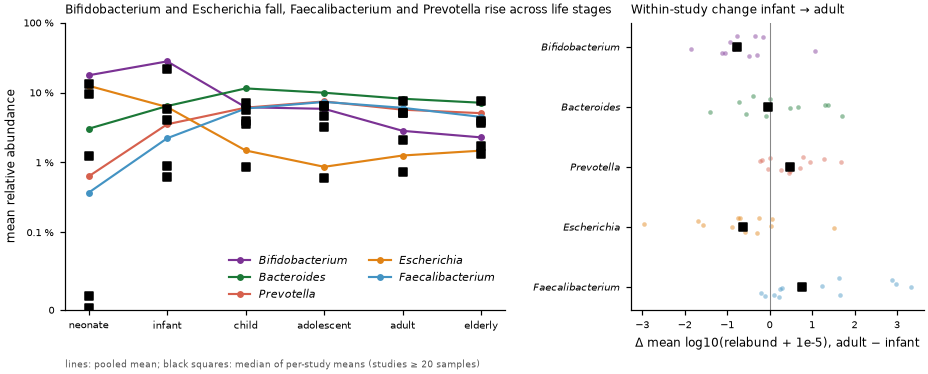
Bifidobacterium dominates neonates and infants and declines through childhood to adulthood; Faecalibacterium and Prevotella rise from near-absence in neonates to several percent in children and adults; Escherichia is a neonatal genus that becomes rare later. Bacteroides is the exception: the pooled rise from infants to adults (+1.51 log10) is not reproduced within studies (median within-study change -0.03), so it is a between-study, not a within-study, pattern. Faint dots in the right panel are individual studies.
Exact definition
Samples with a known age category (n=202,760, 1,209 studies). Mean relative abundance per category (symlog axis); black squares = median of per-study means over studies with >= 20 samples in that category. Per-study consistency, infant vs adult, studies with >= 20 samples in both (effect = Δ mean log10(relabund + 1e-5)): Bifidobacterium: 12 studies, 92% agree, median Δlog10=-0.78 (pooled -1.10); Bacteroides: 12 studies, 50% agree, median Δlog10=-0.03 (pooled +1.51); Prevotella: 12 studies, 75% agree, median Δlog10=+0.48 (pooled +0.83); Escherichia: 12 studies, 75% agree, median Δlog10=-0.63 (pooled -1.15); Faecalibacterium: 12 studies, 83% agree, median Δlog10=+0.77 (pooled +2.04).
2. Prevotella/Bacteroides ratio follows the industrialisation gradient

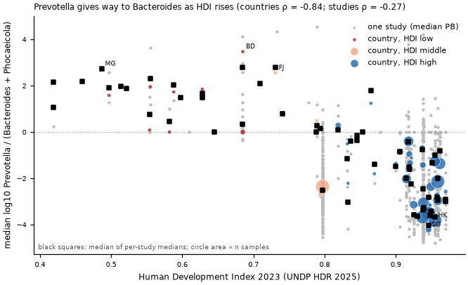
Countries with a low Human Development Index carry Prevotella-dominated gut communities, and the Prevotella/Bacteroides balance tips towards Bacteroides (and its GTDB split-off Phocaeicola) as HDI increases. The relation holds when each study is reduced to a single median, so it is not an artefact of a handful of large cohorts.
Exact definition
Samples aged child to elderly with a country that has an HDI value (n=156,928, 984 studies); PB = log10((Prevotella + 1e-5)/(Bacteroides + Phocaeicola + 1e-5)) per sample; countries with >= 30 such samples plotted (n=59); black squares = median over per-study medians (studies with >= 20 samples in the country). Country-level Spearman ρ(HDI, median PB) = -0.84, p = 4.2e-17. Study-level check: 785 studies with >= 20 samples and >= 80 % from one country, Spearman ρ(HDI, study median PB) = -0.27, p = 5.3e-15. HDI: UNDP Human Development Report 2025, Statistical Annex Table 1 (HDI 2023); band: high >= 0.80, middle 0.70-0.79, low < 0.70; countries without a UNDP value (e.g. PR, TW, GF, IO, TC) have no band.
3. Genera that vanish or bloom with industrialisation (study-level volcano)

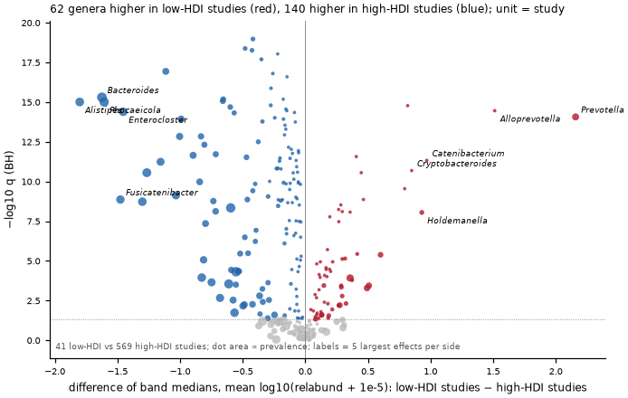
Treating each study as one observation, genera that are more abundant in studies from low-HDI countries (VANISH-like: UBA10281, Alloprevotella, Prevotella, CAG-488, Catenibacterium, Cryptobacteroides) separate from genera that are more abundant in high-HDI studies (BloSSUM-like: Alitiscatomonas, Acutalibacter, Clostridium_A, Fimivicinus, Eisenbergiella, Ruthenibacterium, Fimisoma). Names follow GTDB R232; a random low-HDI study exceeds a random high-HDI study for Prevotella 88 % of the time.
Exact definition
Unit = study: 785 studies with >= 20 child-to-elderly samples of which >= 80 % come from one country; low band HDI < 0.70 (n=41 studies), high band HDI >= 0.80 (n=569); middle-band studies excluded. Per study: mean of log10(relabund + 1e-5) over its samples (absent = 1e-5). Genera with prevalence >= 5 % in the child-to-elderly set (n=283). Effect = difference of band medians; p from two-sided Mann–Whitney over studies; q = Benjamini–Hochberg (q < 0.05 coloured). Column frac_low_studies_higher gives the probability that a random low-HDI study exceeds a random high-HDI study. HDI: UNDP Human Development Report 2025, Statistical Annex Table 1 (HDI 2023); band: high >= 0.80, middle 0.70-0.79, low < 0.70; countries without a UNDP value (e.g. PR, TW, GF, IO, TC) have no band.
4. Lifestyle: non-industrialised vs urban-industrialised

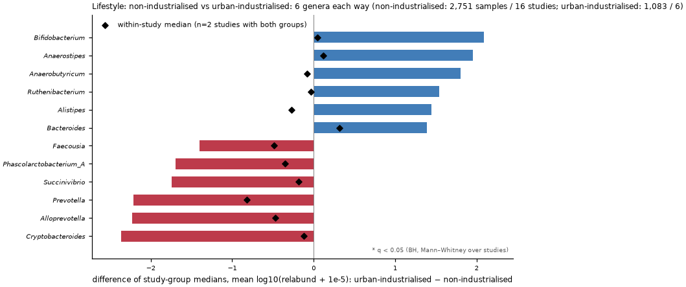
Samples whose curated lifestyle marks a non-industrialised way of life are compared with samples labelled urban-industrialised. Higher in urban-industrialised: Bifidobacterium, Anaerostipes, Anaerobutyricum, Ruthenibacterium; higher in non-industrialised: Cryptobacteroides, Alloprevotella, Prevotella, Succinivibrio (ranked by the study-level effect). 0 of 289 genera reach q < 0.05 at the study level. 2 studies contain both groups with >= 15 samples; the black diamonds show the within-study median effect for the plotted genera.
Exact definition
non-industrialised: 2,751 samples, 16 studies; urban-industrialised: 1,083 samples, 6 studies. non-industrialised = lifestyle in {hunter_gatherer, pastoralist, traditional_agriculturalist, rural_non_industrialized}; urban-industrialised = lifestyle urban_industrialized (curated field, all ages). Genera with prevalence >= 10 % in the union set (n=289). Study level: mean log10(relabund + 1e-5) per study-group with >= 20 samples; effect = difference of group medians over studies; p two-sided Mann–Whitney, q Benjamini–Hochberg. Within-study: studies with >= 15 samples in both groups, effect = mean(urban-industrialised) − mean(non-industrialised), median across studies and share agreeing with the sign of the median. Pooled effect (unadjusted) in the CSV.
5. Lifestyle: athletes vs healthy adults

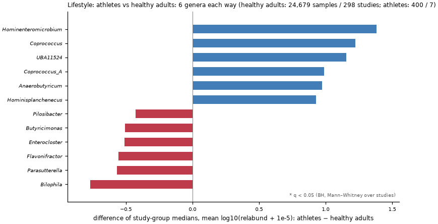
Athlete cohorts (curated lifestyle = athlete) are compared with the healthy adult controls of other studies. Higher in athletes: Hominenteromicrobium, Coprococcus, UBA11524, Coprococcus_A; higher in healthy adults: Bilophila, Parasutterella, Flavonifractor, Enterocloster (ranked by the study-level effect). 0 of 167 genera reach q < 0.05 at the study level. No study contains both groups with >= 20 samples each, so the contrast is entirely between studies (caveat: study, country and protocol differ between the groups).
Exact definition
healthy adults: 24,679 samples, 298 studies; athletes: 400 samples, 7 studies. athletes = lifestyle athlete (any age; all but a handful are adults); healthy adults = health_condition healthy_control, age_category adult, lifestyle not athlete. Genera with prevalence >= 10 % in the union set (n=167). Study level: mean log10(relabund + 1e-5) per study-group with >= 20 samples; effect = difference of group medians over studies; p two-sided Mann–Whitney, q Benjamini–Hochberg. Within-study: studies with >= 20 samples in both groups, effect = mean(athletes) − mean(healthy adults), median across studies and share agreeing with the sign of the median. Pooled effect (unadjusted) in the CSV.
6. Does composition drift with collection year?

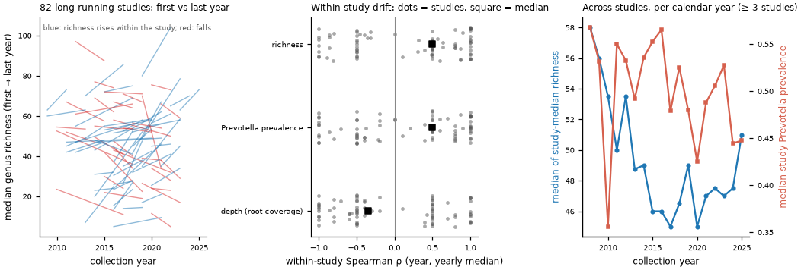
Within the 82 studies that collected samples over three or more calendar years, richness rises with collection year in 60 % of studies (median within-study Spearman ρ = +0.50) and Prevotella prevalence in 55 % (median ρ = +0.50); the depth proxy drifts with a median ρ of -0.35, so part of any richness drift is technical. The drift is consistent enough to deserve a depth-matched follow-up. Across studies, the right panel shows the median of per-study medians per calendar year (all samples with a collection year: 200,800, 1,366 studies; years with >= 3 studies).
Exact definition
collection_year from the curated collection_date (2005–2025; n=200,800 samples with a year, 1,366 studies). Long-running study = >= 3 calendar years with >= 20 samples each (n=82 studies, 41,037 samples). Per study and year: median genus richness, Prevotella prevalence (relabund >= 1e-4), median root_coverage_sum; within-study Spearman ρ between year and the yearly value. Across studies: per calendar year the median over studies (>= 20 samples in that year) of the study median richness / Prevotella prevalence. Companion table c_collection_year_drift_by_year.csv.
7. Disease signatures that reproduce within studies

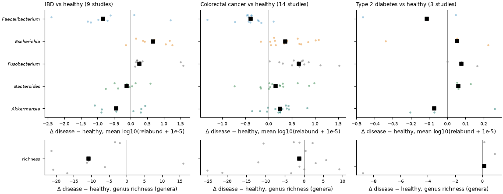
Comparing patients with healthy controls inside the same study removes the between-study differences that dominate pooled contrasts. Inflammatory bowel disease: Faecalibacterium median Δ -0.83 (78 % of 9 studies agree), genus richness Δ -10.8 genera, Escherichia Δ +0.68 (89 % agree). Colorectal cancer: Fusobacterium higher in 100 % of 14 studies (median Δ +0.65). Type 2 diabetes rests on 3 studies and its shifts are small (largest |median Δ| = 0.14).
Exact definition
Samples with health_condition = healthy_control vs (IBD = crohns_disease + ulcerative_colitis + ibd_unspecified | colorectal_cancer | type2_diabetes), all ages. Unit = study with >= 20 samples in both groups. Per-study effect = mean(disease) − mean(healthy) of log10(relabund + 1e-5), or of genus richness. Summary = median of per-study effects; "agree" = fraction of studies whose effect has the sign of that median. IBD, Faecalibacterium: 9 studies, median Δ=-0.83, 78% agree; IBD, Escherichia: 9 studies, median Δ=+0.68, 89% agree; IBD, Fusobacterium (all GTDB genera): 9 studies, median Δ=+0.26, 100% agree; IBD, Bacteroides: 9 studies, median Δ=-0.12, 67% agree; IBD, Akkermansia: 9 studies, median Δ=-0.44, 56% agree; IBD, genus richness: 9 studies, median Δ=-10.79, 89% agree; Colorectal cancer, Faecalibacterium: 14 studies, median Δ=-0.38, 93% agree; Colorectal cancer, Escherichia: 14 studies, median Δ=+0.36, 93% agree; Colorectal cancer, Fusobacterium (all GTDB genera): 14 studies, median Δ=+0.65, 100% agree; Colorectal cancer, Bacteroides: 14 studies, median Δ=+0.15, 71% agree; Colorectal cancer, Akkermansia: 14 studies, median Δ=+0.24, 71% agree; Colorectal cancer, genus richness: 14 studies, median Δ=-1.20, 64% agree; Type 2 diabetes, Faecalibacterium: 3 studies, median Δ=-0.11, 67% agree; Type 2 diabetes, Escherichia: 3 studies, median Δ=+0.05, 67% agree; Type 2 diabetes, Fusobacterium (all GTDB genera): 3 studies, median Δ=+0.08, 67% agree; Type 2 diabetes, Bacteroides: 3 studies, median Δ=+0.06, 100% agree; Type 2 diabetes, Akkermansia: 3 studies, median Δ=-0.07, 67% agree; Type 2 diabetes, genus richness: 3 studies, median Δ=+0.14, 67% agree.
8. Richness and Shannon diversity by life stage, HDI band and health condition

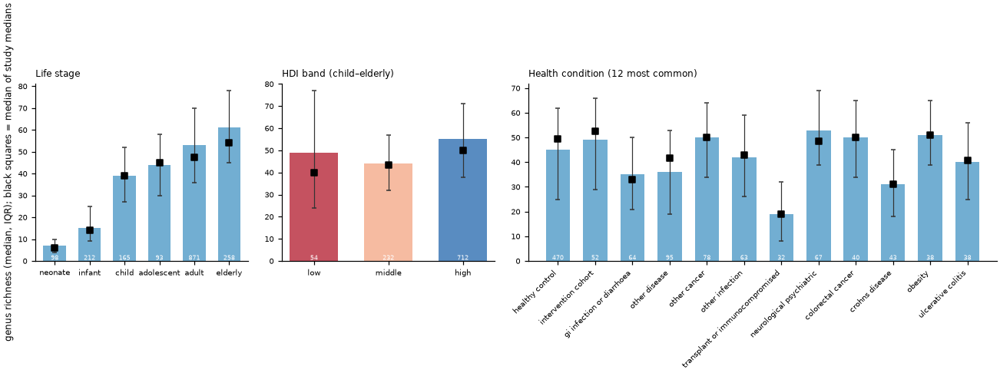
Genus richness rises from a median of 7 genera in neonates to 53 in adults and 61 in the elderly. Children and adults from low-HDI countries do not show more genera than those from high-HDI countries in this collection (median 49 vs 55; per-study medians 40 vs 50), a result that most likely reflects the shallower sequencing of many low-HDI cohorts rather than biology (see the depth card). Across health conditions the lowest median richness is in transplant or immunocompromised (19) and the highest in neurological psychiatric (53). Numbers inside the bars = n studies.
Exact definition
Richness = number of genera with relabund > 0 in the Sandpiper profile; Shannon on genus proportions (from the per-sample summary table; CSV only). Panels: life stage (n=202,760); HDI band for child-to-elderly samples with a country HDI (n=156,928; UNDP Human Development Report 2025, Statistical Annex Table 1 (HDI 2023); band: high >= 0.80, middle 0.70-0.79, low < 0.70; countries without a UNDP value (e.g. PR, TW, GF, IO, TC) have no band); health condition for the 12 most common curated conditions (n=97,394). Bars = pooled median with IQR; black squares = median of per-study medians (studies >= 20 samples). Per-group n, n studies and per-study medians are in the CSV.
9. World map: Prevotella prevalence

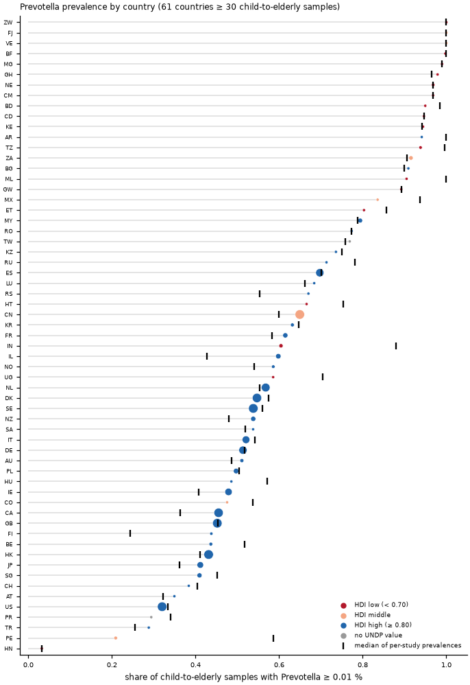
Prevotella is carried by nearly every child and adult sampled in low-HDI African, South-Asian and Latin-American countries but by well under half in most of Europe, North America and East Asia (interactive map: Atlas → taxon map). Highest: ZW 100%, FJ 100%, VE 100%; lowest: HN 3%, PE 21%, TR 29%.
Exact definition
Prevalence = share of child-to-elderly samples (age_category child, adolescent, adult or elderly) with genus relative abundance >= 1e-4 (0.01 %); countries with >= 30 such samples (n=61). Dot colour = HDI band (UNDP Human Development Report 2025, Statistical Annex Table 1 (HDI 2023); band: high >= 0.80, middle 0.70-0.79, low < 0.70; countries without a UNDP value (e.g. PR, TW, GF, IO, TC) have no band); black tick = median of per-study prevalences (studies with >= 20 samples in the country). The CSV adds mean relative abundance and n studies.
10. World map: Bifidobacterium prevalence

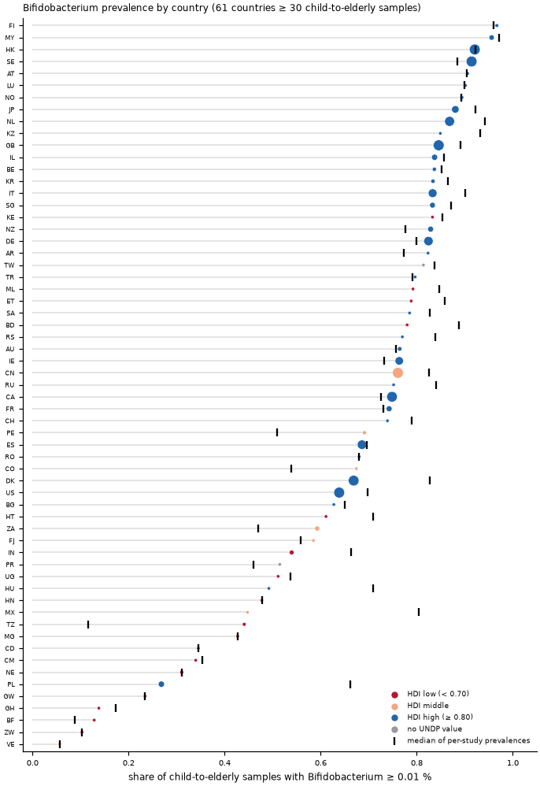
In neonates and infants Bifidobacterium is present in 73% of samples overall, so the chart shows children and adults, where prevalence differs between countries. Highest: FI 97%, MY 96%, HK 92%; lowest: VE 6%, ZW 10%, BF 13%. The CSV also carries the infant values per country.
Exact definition
Prevalence = share of child-to-elderly samples with genus relative abundance >= 1e-4 (0.01 %); countries with >= 30 such samples (n=61). Dot colour = HDI band (UNDP Human Development Report 2025, Statistical Annex Table 1 (HDI 2023); band: high >= 0.80, middle 0.70-0.79, low < 0.70; countries without a UNDP value (e.g. PR, TW, GF, IO, TC) have no band); black tick = median of per-study prevalences (studies with >= 20 samples in the country).
11. Caution: richness tracks sequencing depth

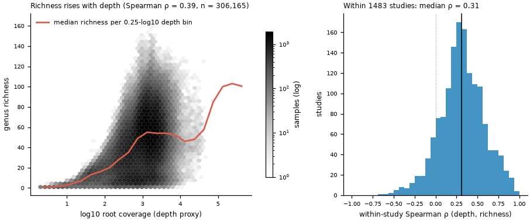
The number of genera detected in a sample rises steadily with the amount of sequence profiled, and this holds inside individual studies too (median within-study Spearman ρ = 0.31; positive in 89 % of studies). Any richness difference between groups that also differ in depth (countries, eras, sample types) is therefore partly or wholly technical. The atlas does not rarefy, so read richness cards with this curve in mind.
Exact definition
All 306,165 analysis samples; depth proxy = Sandpiper root_coverage_sum (marker-gene coverage summed over the profile; roughly proportional to bases sequenced); richness = genera with relabund > 0. Hexbin on log10 depth; line = median richness in 0.25-log10 depth bins (companion CSV g_depth_vs_richness_bins.csv). Within-study ρ computed for studies with >= 20 samples (n=1483); the card CSV lists them.
12. How much of the composition does "study" explain?

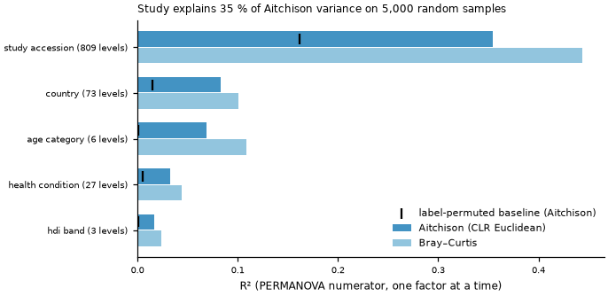
On a random subsample of 5,000 samples, the study a sample came from explains 35% of the Aitchison-distance variance (Bray–Curtis: 44%), versus 8% for country, 7% for life stage and 3% for health condition; HDI band explains 2%. Study has many more levels than the other factors and so absorbs part of their signal, but the label-permuted baselines (black ticks) show how much R² the number of levels alone produces; study still stands far above its baseline. This is why every observation on this page reports a within-study check.
Exact definition
Subsample: 5,000 samples drawn without replacement (seed 42) from samples with a known country and life stage; matrix = 167 genera with prevalence >= 10 %, CLR after adding 1e-5, Euclidean (Aitchison) distance; Bray–Curtis on renormalised relabund (samples with none of the kept genera set to distance 1); also the Euclidean distance on the 5 released PCA scores (column r2_pca5). R² is the PERMANOVA numerator, one factor at a time (marginal, unadjusted). Permuted baseline = mean R² over 20 label shuffles. HDI band from UNDP Human Development Report 2025, Statistical Annex Table 1 (HDI 2023); band: high >= 0.80, middle 0.70-0.79, low < 0.70; countries without a UNDP value (e.g. PR, TW, GF, IO, TC) have no band.
13. Exploratory: which genus dominates a sample, by life stage exploratory

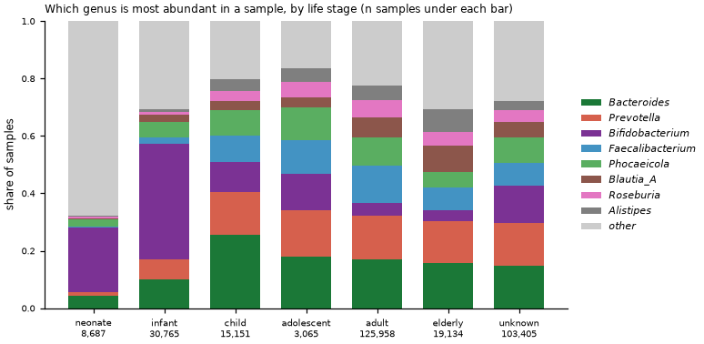
For each sample the single most abundant genus was taken from the Sandpiper profile. Bifidobacterium is the top genus in 23% of neonates and 40% of infants but only 4% of adults. The 103,405 samples without an age category have a dominant-genus mix that sits between children and adults (Bifidobacterium-dominated in 13%), i.e. they are mostly but not exclusively adult.
Exact definition
All analysis samples (n=306,165); top genus = genus with the largest relative abundance in the genus table; the eight most common top genera are shown, the rest grouped as other.
14. Exploratory: birth mode and the infant gut, within studies exploratory

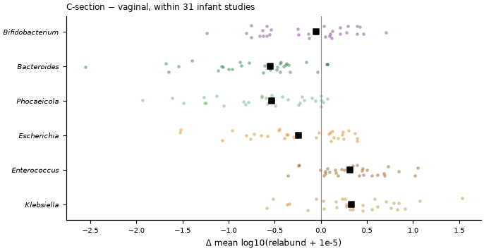
Among infant studies that recorded both vaginal and Caesarean births, the well-known Caesarean signature reproduces study by study: Bacteroides and Phocaeicola are depleted after C-section (median Δ -0.55 / -0.53) while Enterococcus and Klebsiella are enriched (+0.32 / +0.33). Bifidobacterium shows a median within-study difference of -0.05 (52% of studies agree) against a pooled contrast of -0.91 — a textbook case of a between-study artefact. Each dot is one study.
Exact definition
Neonate and infant samples with a curated delivery_mode (n=14,815, 68 studies); unit = study with >= 20 samples in both birth modes; effect = mean log10(relabund + 1e-5) in C-section minus vaginal; summary = median across studies; agree = share of studies with the sign of the median. Bifidobacterium: 31 studies, median Δ=-0.05, 52% agree; Bacteroides: 31 studies, median Δ=-0.55, 90% agree; Phocaeicola: 31 studies, median Δ=-0.53, 84% agree; Escherichia: 31 studies, median Δ=-0.24, 58% agree; Enterococcus: 31 studies, median Δ=+0.32, 87% agree; Klebsiella: 31 studies, median Δ=+0.33, 81% agree.
15. Exploratory: Akkermansia prevalence by life stage and HDI band exploratory

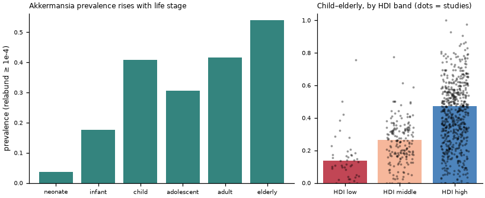
Akkermansia (the mucin degrader A. muciniphila) is detected in 4% of neonates and 42% of adults. Among children and adults its prevalence is 14% in low-HDI countries versus 47% in high-HDI countries, consistent with its BloSSUM classification in the volcano card; the per-study dots show the spread behind the bars.
Exact definition
Prevalence at relabund >= 1e-4; life-stage panel over samples with a known age category (n=202,760); HDI panel over child-to-elderly samples with a country HDI (n=156,928; UNDP Human Development Report 2025, Statistical Annex Table 1 (HDI 2023); band: high >= 0.80, middle 0.70-0.79, low < 0.70; countries without a UNDP value (e.g. PR, TW, GF, IO, TC) have no band); dots = per-study prevalence for studies with >= 20 samples in the band (n=804).
16. Exploratory: feeding mode and the infant gut, within studies exploratory

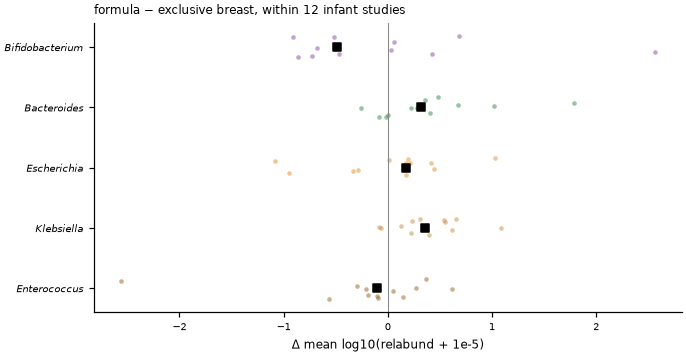
Only 12 infant studies record exclusive breastfeeding and formula feeding for at least 20 infants each, so the evidence base is thin. Bifidobacterium: median Δ -0.49 with 58% of 12 studies agreeing. Bacteroides: median Δ +0.32 with 67% of 12 studies agreeing. Escherichia: median Δ +0.17 with 67% of 12 studies agreeing. Klebsiella: median Δ +0.35 with 83% of 12 studies agreeing. Enterococcus: median Δ -0.10 with 58% of 12 studies agreeing. Bifidobacterium is lower in formula-fed infants in the median study.
Exact definition
Neonate and infant samples with feeding_mode exclusive_breast or formula (n=6,194, 50 studies); unit = study with >= 20 samples in both groups; effect = mean log10(relabund + 1e-5) in formula minus exclusive-breast; summary = median across studies. Bifidobacterium: 12 studies, median Δ=-0.49, 58% agree; Bacteroides: 12 studies, median Δ=+0.32, 67% agree; Escherichia: 12 studies, median Δ=+0.17, 67% agree; Klebsiella: 12 studies, median Δ=+0.35, 83% agree; Enterococcus: 12 studies, median Δ=-0.10, 58% agree.
17. Exploratory: the most prevalent species across life stages exploratory

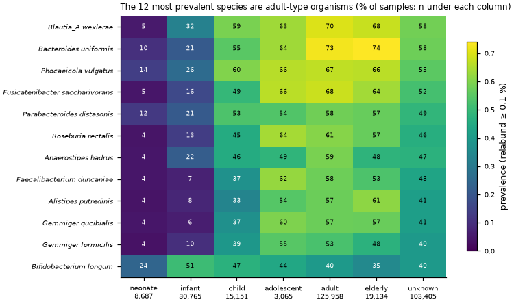
At species level (GTDB R232 names; species table thresholded at 0.1 % relative abundance) the twelve most prevalent species in the whole collection are adult-type organisms except Bifidobacterium longum, which peaks in early life; the others are found in 4–14 % of neonates and climb through infancy and childhood. The unknown-age column again resembles adults. Suffixed names such as Blautia_A are GTDB placeholder genera.
Exact definition
Species prevalence = share of samples with relabund >= 1e-3 (the species table is released at this threshold); denominators are all analysis samples per life stage (n = neonate 8,687, infant 30,765, child 15,151, adolescent 3,065, adult 125,958, elderly 19,134, unknown 103,405).
18. Exploratory: hospital- vs community-recruited adults (location_site) exploratory

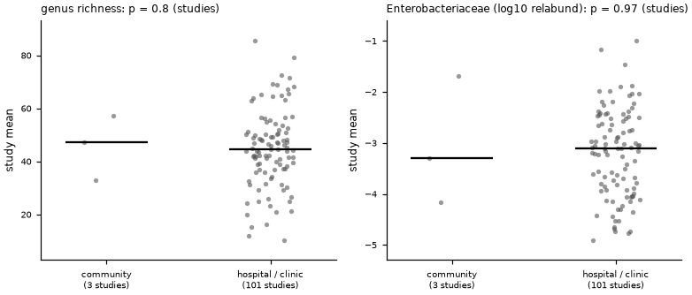
Adults whose location_site names a hospital or clinic (13,117 samples, 101 studies with >= 20) versus adults whose location_site names a community, village, household or town (169 samples, 3 studies): at the study level, genus richness differs by -2.9 genera (hospital − community, p = 0.8) and Enterobacteriaceae by +0.19 log10 (p = 0.97). With only 3 community-recruited studies the comparison has almost no power; recruitment site is a proxy that mixes health status, country and protocol, so this card documents the contrast rather than interpreting it.
Exact definition
Adults (child–elderly) with a curated location_site; hospital/clinic = site text matches /hospital|clinic|medical cent|health cent|infirmary|nicu|intensive care|ward\b/ and not the community pattern; community = matches /community|village|household|town\b|settlement/ and not the hospital pattern. Unit = study with >= 20 samples in the group: study mean of genus richness and of log10(Enterobacteriaceae relabund + 1e-5) (family sum over GTDB genera); effect = difference of group medians over studies; p two-sided Mann–Whitney over studies.